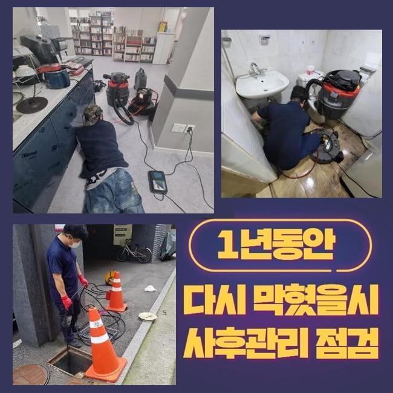
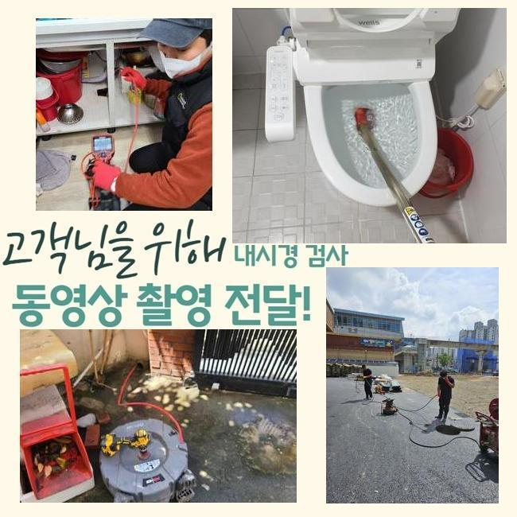
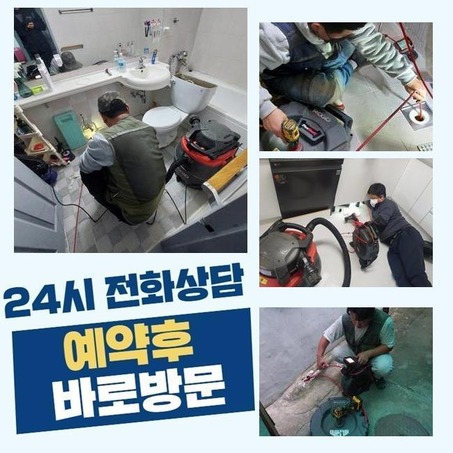
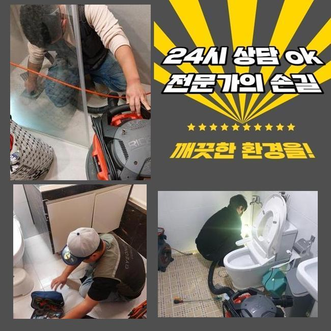
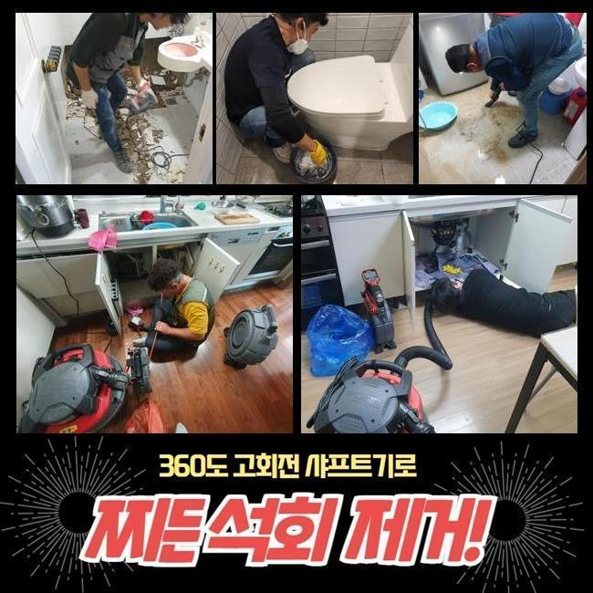
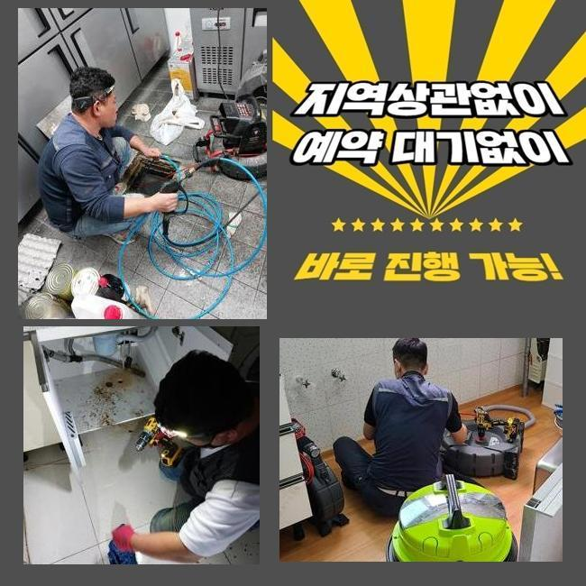

🏠 양주 마전동화장실바닥막힘 회암동 냄새차단 출장수리
양주 마전동 하수구막힘 전문 시공 후기

📋 작업 개요
- 위치: 양주 마전동, 마전동, 양주
- 서비스 유형: 하수구막힘, 배관막힘, 누수수리, 배관청소, 악취차단
- 작업 일시: 2025. 2. 25. 12:21
- 업체명: 하수구수사대 (010-5615-2118)
🔍 문제 상황
양주 마전동화장실바닥막힘 회암동 냄새차단 출장수리
얼마전 막히는 문제때문에 불편들을 호소하셨던 고객께 문의를 받게되었어요
의뢰자께서는 하수설비의 전문지식까진 아니였지만 나름의 대처법을 가지고있던 모습이였어요
의뢰인의 경우 배수구를 닦아주고 막힌 스팟을 찾으려고 관찰해보았으나 어디부분이 시작점인지 인지하지 못해 저희업체에게 의뢰했던 상태였어요
계신 곳에 도착하니 계속적인 시도로 고생하신것이 눈에 띄었어요
일반인 입장에서는 명확한 이유에 대해 알아내기힘든 경우들이 상당수에요
해당 장소에서 하수도를 점검하니 주의해야할 증상은 없었습니다
의뢰자분은 공용관로에서 원인들이 자리했을 확률이 있다고 판단했는데요
외측에 나무등이 자리한 상태라면 하수관으로 침투된다거나 이물이 흘러들어갈 확률들이 존재합니다
이것으로 바깥의 하수구가 막히게될 수 있어요

🔎 원인 분석
💡 전문가 진단: 정밀 진단 장비를 사용하여 슬러지의 고착 여부를 판명하고 타격/세척 작업을 실시했습니다.
고객분에게 지금 예상되는 이유들을 설명하고 밖의 배관실황을 관찰해야된다고 일러드렸습니다
의뢰인분도 안내드린 내용들을 들으시고 중앙관로의 진단에 동의했죠
시정을 시작하기에 앞서 여러 준비들을 거쳤어요
하수시스템 정체의 무엇이다! 라고 할 수가 없죠
배수구가 드러나있다면 낙엽등 근방에서 유입된 여러 폐기물들이 관로로 축적됩니다
바깥쪽에 비소식이 있을때 외부에 위치한 설비의 상황들을 체크해주지않으면 증세규모는 장담할 수 없어요
또한, 나무의 하수관으로 침투해버리는 사례도 자주 일어나요
배수관을 감싼다거나 더불어 표면손실 이슈도 발생케하죠
이런 문제들이 거듭되면 물빠짐이 멈춰버려 막히게되는 상황들이 생겨버립니다
그밖에 내구성이 떨어져있다거나 손상에도 배수가 이뤄질 수가 없어서 막혀버려요

🔧 작업 과정
매립시기가 꽤 지나 하수관이 튼튼하지 못하면 여러 폐기물들이 누적되는 조건이 조성됩니다
이어서 대다수 배수결함의 까닭은 정기성을 갖춘 관리책 실시를 신경써주지 않아서죠
그때그때 소홀히 하면, 작은 이물이 자리를 잡으면서 막혀버리게 되는 상황들이 심해질거에요
그러므로 밖의 배관실태를 시기적절하게 체크해보고 관리하는게 미리 조치할 수 있는 실질적인 방식이죠
수많은 까닭들을 알고서 선제적으로 문제들을 피하는게 우선입니다
내시경장비로 바깥쪽 하수시스템들의 상태들을 확인했어요
내시경장치로 확인하니 하수도의 특정 구간들이 잔재와 기름때문에 막혀버린것이 관찰되었습니다
이토록 하수관로가 막혀버리면 물의 배수가 불가하여 누수되어버리는 사태까지 발발하기에 대처를 이행하는게 필요합니다
상태를 보고 이물이 모인 곳을 포인트로 설정하고 청소해보기로 결론 지었어요
고압청소까지 준비하여 강한 힘으로 배수관을 군데군데 청소했는데요
뭉쳐있던 이물들을 깊은곳에서부터 제거시키니 막힌상태의 하수가 흘러나왔어요
처음엔 잔해들이 배출됐고 이물이 빠지며 시간이 흐름에 따라 수월하게 본 모습을 되찾았어요
물이 원활히 빠지는 형상을 체크해보며 의뢰자께서도 전부 보셨습니다
작업들이 이행되면서 고객과도 얘기하며 잔재들이 쌓이게되는 연유들을 안내하니 의뢰인분도 따로 궁금했던 내용들을 질문했어요
이렇게 여러분의 경우 관리를 해주는것의 중요도를 인지하게되었고 미래에도 때에 맞춘 청소들의 당위성에 대해 인지하셨어요
오차없이 작업들이 완료되고 하수관이 완전히 바로 잡히면서 고객분은 배출되는 현상도 볼 수 있었어요


✅ 작업 완료
고객분에게도 결과들을 이해시켜드리고 나중에까지의 관리방식들도 일러드렸습니다
정기적으로 외부라인을 살펴보고 상황마다 전문진들의 대책을 염두에 두는게 합리적이라는 것을 안내했습니다
이것으로 고객님에게서 고민을 해결하게되어 안심했습니다
여러분의 안심할 수 있는 유수에 답답함이 없도록 시간에 상관없이 저희의 전문가들에게 문의하시기 바랍니다



⚠️ 베란다 누수 및 방수 관리 방법
- ✅ 비가 많이 올 때 창틀 주변이나 아래층 천장에 얼룩이 생기는지 정기적으로 확인해 보세요.
- ✅ 우수관 주변 실리콘 마감이 들뜨거나 깨진 틈새가 있는지 손상 여부를 수시로 체크하세요.
- ✅ 베란다 바닥 타일의 줄눈(메지)이 소실되면 그 틈으로 물이 침투하여 누수가 유발됩니다.
- ✅ 누수 의심 증상 발견 시 방치하면 아래층 손실이 커지므로 즉시 전문가의 진단을 받으십시오.
💡 핵심 정리
- 확실한 장비 작업(내시경 점검 및 샤프트 스케일링)으로 원인을 뿌리 뽑습니다.
- 작업 후 1년 이내에 동일한 부위 재발 시 100% 무상 A/S 서비스를 보장합니다.
- 서울 · 경기 · 인천 전 지역에 24시간 언제든 긴급 출동할 수 있도록 항시 대기 중입니다.
❓ 자주 묻는 질문 (FAQ)
🚨 양주 마전동 하수구막힘 문제로 고민이신가요?
정확한 원인 진단과 확실한 시공으로 재발 없는 해결을 약속드립니다.
24시간 긴급 출동 | 서울 · 경기 · 인천 전지역 | 1년 내 재발 시 무상 A/S